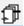
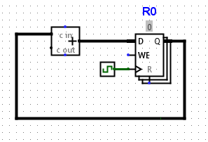
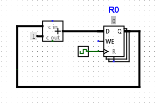

Learn how to build a basic synchronous counter in Logisim.
Counters are one of the most basic sequential circuits used to introduce the clock and other sequential ideas. This short guide walks you through building a simple four-bit synchronous counter that counts once per clock cycle.- In the top bar, click the register .
- Place the register in circuit view.
- In the Properties menu:
- Set Data Bits to 4.
- Set Label to R0.
- Set Show in Registers Tab to Yes.
- In the Design menu, click Wiring > Clock.
- Place the clock to the left of the clock input of the register (triangle).
- Wire the clock to the clock input of the register.
- In the Design menu, click Arithmetic > Adder.
- Place the adder to the left of the register's D input.
- In the Properties menu:
- Set Data Bits to 4.
- Wire the adder output to the register's D input.
- Wire the register's Q output to the adder's first input.

- In the Design menu, click Wiring > Constant.
- Place the constant to the left of the adder's second input.
- In the Properties menu:
- Set Data Bits to 4.
- Set Value to 0x1 (1 in hex).
- Wire the constant to the adder's second input.

Congratulations! You have successfully built a working four-bit synchronous counter.